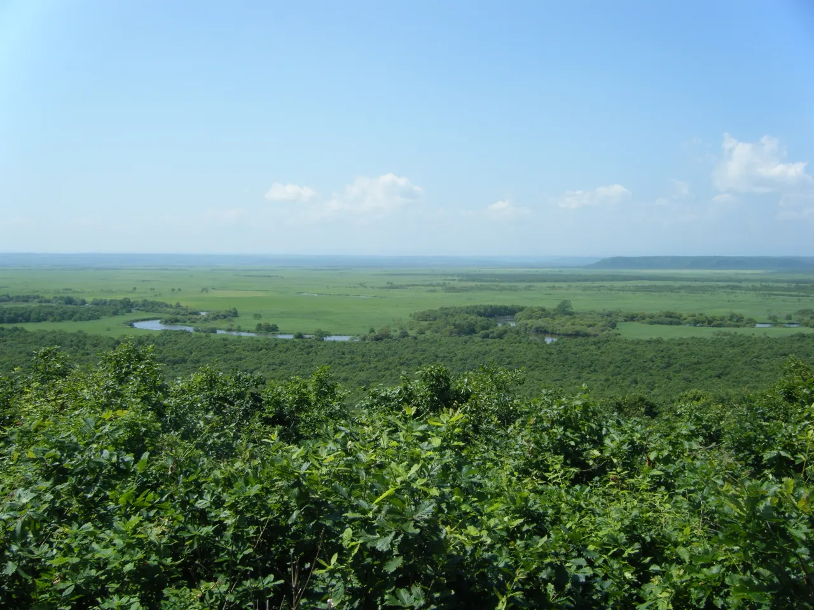
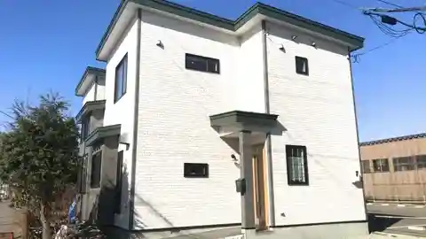
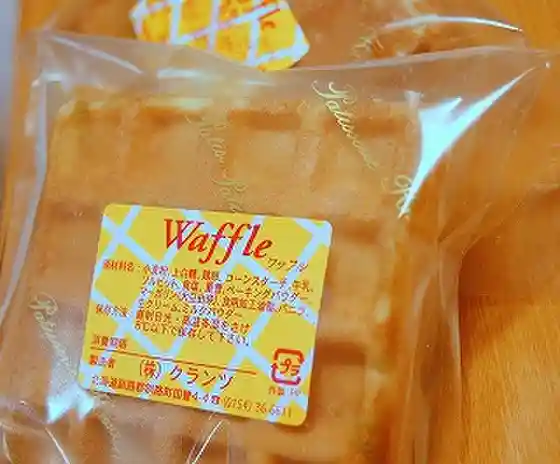
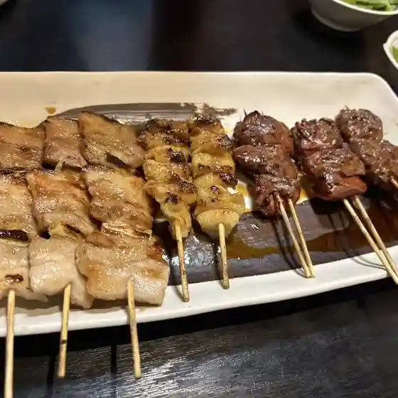
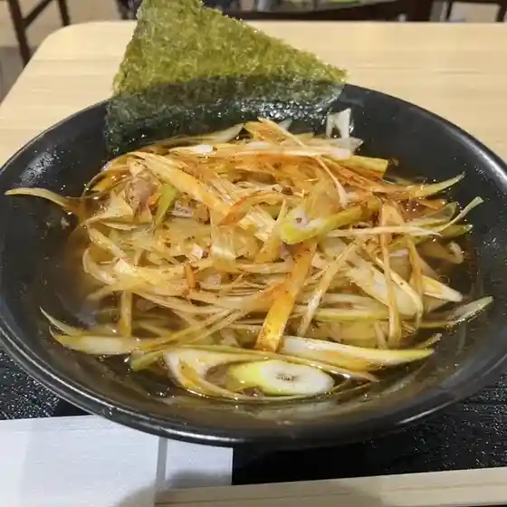
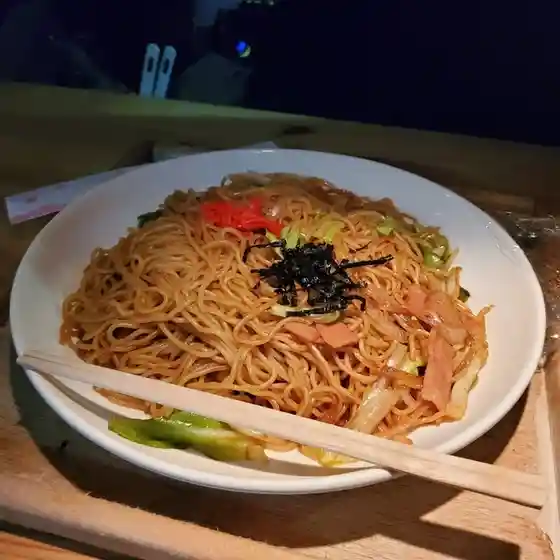
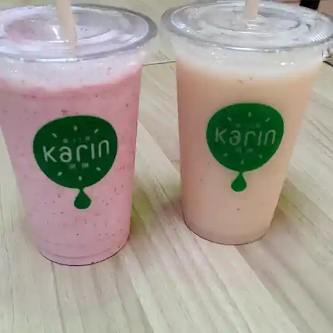
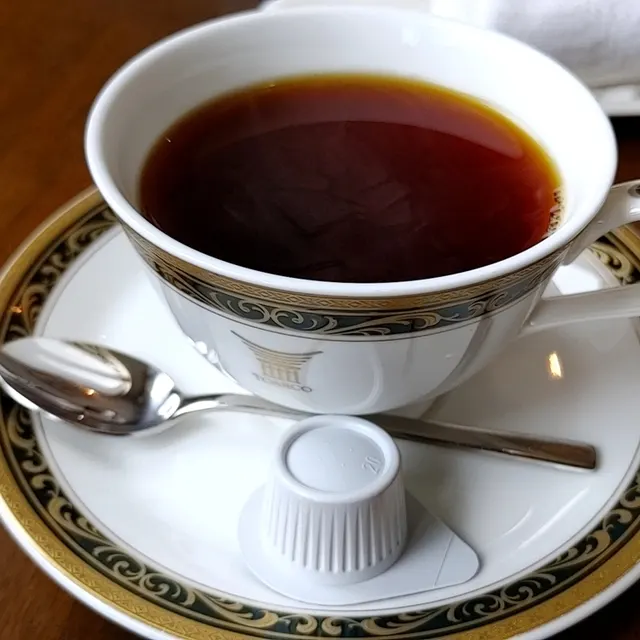
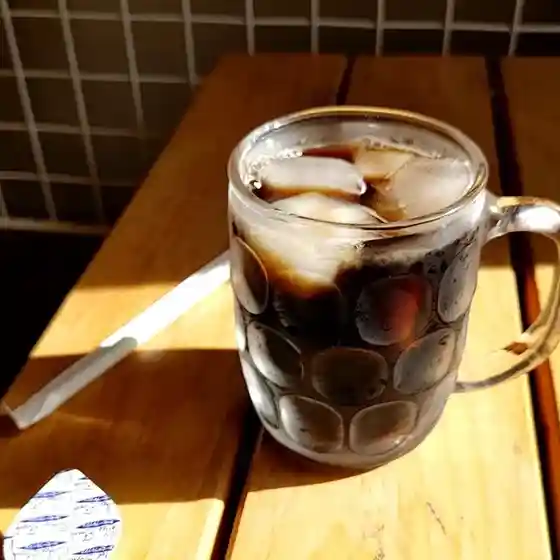
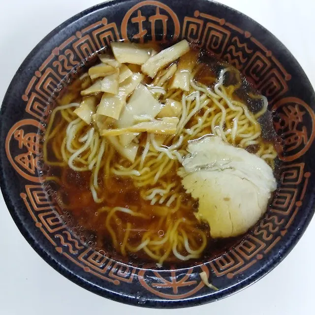

Kushirocho
Kushirocho · Hokkaido
Kushirocho
Highlighted on the Hokkaido map.

Stay
ハグハグぎゅっ宿泊所

Hug Hug Gyutto Lodging
Guesthouse in Kushirocho, Hokkaido.
Dining
クランツ 国誉店

Kurantsu Kuni Yo Mise
こうぞう

Kouzou
らーめん亭 イオン釧路店

Raamen Tei Ion Kushiro Mise
松華亭

Shouka Tei
果汁工房 果琳 イオン釧路店

Kajuu Koubou Ka Rin Ion Kushiro Mise
グランピエ

Guranpie
のーむ

Noomu
森谷食品株式会社

Moritani Shokuhin Kabushikigaisha
む～んらいと この豚丼 イオン釧路店
Mu ~ Nraito Kono Butadon Ion Kushiro Mise
ビアード・パパ 釧路店
Biaado Papa Kushiro Mise
回転寿し まつりや 木場店
Kaiten Hisashi Shi Matsuriya Kiba Mise
釧之助 本店
Sennosuke Honten
ミスタードーナツ 運動公園通りショップ
Misutaadoonatsu Undoukouen Touri Shoppu
達古武オートキャンプ場 売店
Tooru Kotake Ootokyanpu Ba Baiten
築地銀だこ イオン釧路店
Tsukiji Gin Dako Ion Kushiro Mise
LAKOLE イオン釧路
Lakole Ion Kushiro
釧路町地産地消センター ロ・バザール
Kushiro Chouchi Sanchi Shou Sentaa Ro Bazaaru
伊予製麺 釧路店
Iyo Seimen Kushiro Mise
BEN BEN CAFE DCM木場店
Ben Ben Cafe Dcm Kiba Mise
クレージークレープス イオン釧路店
Kureejiikureepusu Ion Kushiro Mise
お茶のふじえだ園
O Cha Nofujieda Sono
焼肉菜包 朴然 運動公園通店
Yakiniku Na Tsutsumi Boku Zen Undoukouen Toori Mise
菊地漁業部
Kikuchi Gyogyou Bu
酒房咲くら
Sake Bou Saku Ra